-
Furina De Fontaine
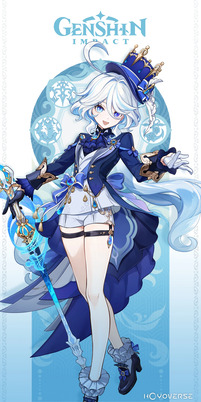A Arconte Hydro de Fontaine, conhecida por sua presença teatral e carismática. Ela usa uma espada e, como Arconte, tem habilidades grandiosas que exploram o potencial máximo da visão Hydro, com sinergias únicas em equipe.
Visão/ HYDRO Arma/ Espada -
Neuvillette
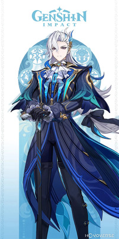O chefe da corte de Fontaine e uma figura de autoridade. Ele carrega a visão Hydro e utiliza um catalisador. Suas habilidades têm um impacto visual impressionante, controlando grandes quantidades de água com força destrutiva.
Visão/ HYDRO Arma/ Catalizador -
Lyney
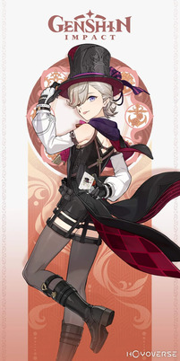Um ilusionista carismático que brilha no palco. Ele tem a visão Pyro e utiliza um arco como arma principal. Suas habilidades refletem sua paixão por magia, criando explosões pirotécnicas e truques para confundir os inimigos.
Visão/ PYRO Arma/ Arco -
Lynette
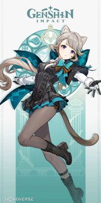A irmã de Lyney, Lynette é uma assistente ágil e misteriosa. Ela tem a visão Anemo e usa uma espada. Suas habilidades são focadas em mobilidade e suportar o grupo, utilizando o vento de forma elegante.
Visão/ ANEMO Arma/ Espada -
Freminet
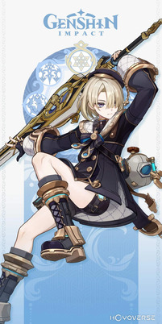Um jovem mergulhador de Fontaine, conhecido por sua calma e precisão. Ele tem a visão Cryo e usa um espadão. Suas habilidades giram em torno do controle de inimigos e ataques poderosos com o gelo.
Visão/ CRYO Arma/ Espadão -
Wriothesley
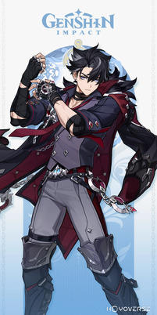Um homem enigmático que se destaca em combate. Ele possui a visão Cryo e usa um catalisador como arma. Seus ataques são ágeis e intensos, combinando gelo com técnicas únicas de luta.
Visão/ CRYO Arma/ Catalizador -
Charlotte
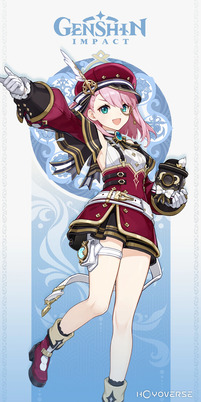Uma jornalista animada com grande curiosidade pelo mundo. Sua visão é Cryo, e ela também utiliza um catalisador. Suas habilidades trazem utilidade ao grupo, além de causar dano elemental com elegância.
Visão/ CRYO Arma/ Catalizador -
Navia
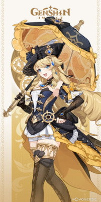Uma jovem nobre de Fontaine com grande senso de justiça. Ela possui a visão Geo e usa um espadão. Suas habilidades são focadas em resistência e proteção, enquanto inflige danos massivos com Geo.
Visão/ GEO Arma/ Espadão -
Clorinde
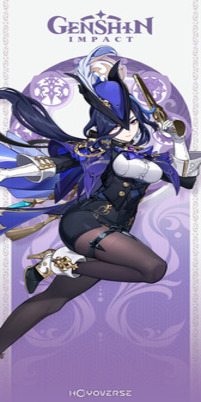Uma duelista habilidosa e guardiã de Fontaine. Ela tem a visão Electro e utiliza uma espada. Suas habilidades são rápidas e precisas, refletindo sua perícia em combate corpo a corpo.
Visão/ ELECTRO Arma/ Espada -
Sigewinne
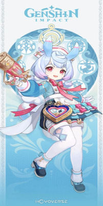Uma figura misteriosa e curiosa em Fontaine. Ela carrega a visão Hydro e utiliza um arco. Suas habilidades são voltadas para suporte e cura, tornando-a essencial em combates prolongados.
Visão/ HYDRO Arma/ Arco -
Chevreuse
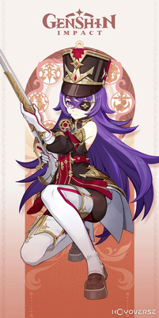Uma aventureira ousada com a visão Pyro. Ela usa uma lança, e suas habilidades trazem um toque explosivo ao campo de batalha, causando dano em área e fortalecendo o grupo.
Visão/ PYRO Arma/ Lança -
Emilie
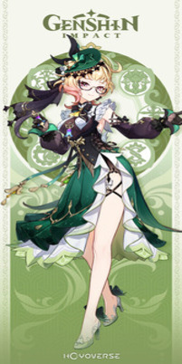Uma personagem com a visão Dendro que utiliza uma lança. Suas habilidades têm sinergia com plantas e o ambiente, causando dano contínuo aos inimigos e apoiando aliados com buffs.
Visão/ DENDRO Arma/ Lança